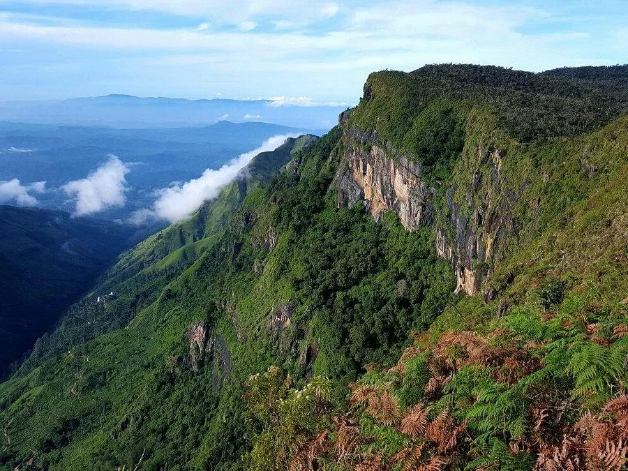
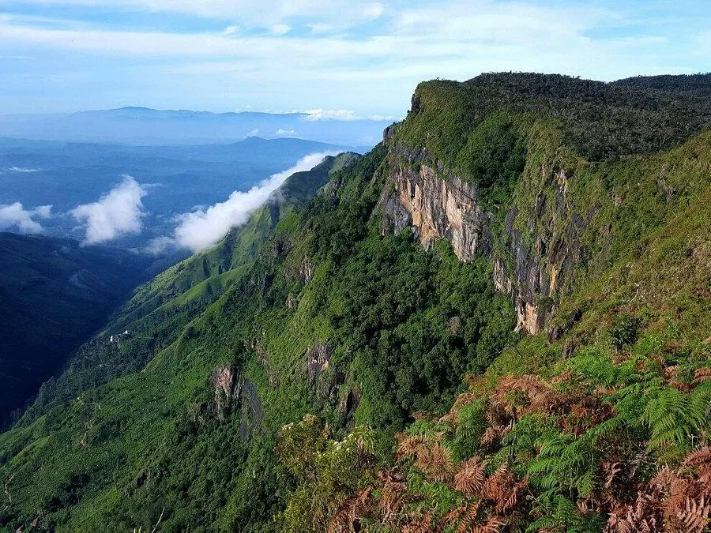

Island Majesty
SRI LANKAN LEOPARD
ScrollFACTS
Sri Lankan leopards are highly adaptable. They are found in a range of habitat types, through from different
kinds of
forest, to grasslands and even in tea plantations and home gardens! They are effective hunters and take a
variety of
different prey items. They mostly prefer small deer, but will also eat wild boar, hare, monkeys, birds and
even
crabs
and insects. This flexibility has allowed them to survive in a range of environments across Sri Lanka.
Less than 1000 Sri Lankan leopards are left in the wild. This is due mainly to conflict with humans – human
encroachment
into leopard habitat, hunting of animals that come too close to human areas or interfere with farmers, and
poaching for
skins and other body parts.
The National Zoo and Aquarium is home to 4 Sri Lankan Leopards; Ankesh and Yakalla and their offspring Asanka
and
Chatura.
| COOSERVATION STATUS | Endangered |
| DISTRIBUTION | Sri Lanka |
| LIFE SPAN | 12 to 15 Years |
VENUES WHERE LEOPARDS ARE FOUND

Yala National Park
Yala National Park is a prime leopard habitat, known for its diverse wildlife and varied landscapes, offering an excellent chance to spot these elusive creatures. This National Park has the highest density of leopards to be found anywhere in the world and is as much as one leopard per square kilometer.


Wilpattu National Park
Wilpattu, the largest national park in Sri Lanka, provides a sanctuary for leopards within its dense forests and serene lakes.
 

Horton Plains National Park
Situated amidst misty mountains, Horton Plains hosts a population of leopards thriving in its unique highland ecosystem.
THREATS
Habitat Loss Threat ⚠️
Habitat loss stands as a significant threat to the survival of Sri Lankan leopards. Human-induced activities such as deforestation, land conversion for agriculture, and urban development have drastically reduced the leopard's natural habitats. The shrinking habitats confine leopards to smaller areas, increasing encounters with humans and leading to escalated conflicts. These disruptions to their habitat greatly impact their behavior, foraging patterns, and reproductive success, threatening the overall well-being of the leopard population.
Consequences 🛑
The consequences of habitat loss are profound for Sri Lankan leopards. The reduction and fragmentation of their habitats pose immediate and long-term challenges to their survival. As their habitats shrink, leopards face heightened competition for resources and space, resulting in intensified human-leopard conflicts. Additionally, the loss of crucial habitats fragments leopard populations, reducing genetic sectionersity and limiting their ability to adapt to changing environments. This disruption to their natural habitats significantly compromises the leopard's ability to thrive and perpetuates their vulnerability to extinction.
Prevention Methods 🛟
Mitigating the threat of habitat loss requires proactive and collaborative measures. Implementing and enforcing stringent regulations against deforestation, land conversion, and habitat degradation are pivotal steps. Conservation initiatives focusing on habitat restoration, reforestation, and protected area management are critical in safeguarding vital leopard habitats. Engaging local communities through education, incentivizing sustainable land-use practices, and fostering coexistence between humans and leopards are essential strategies. Furthermore, promoting landscape-level conservation approaches and establishing wildlife corridors to connect fragmented habitats are crucial steps toward securing the long-term survival of Sri Lankan leopards amidst habitat loss.
Illegal Wildlife Trade Threat ⚠️
The illegal wildlife trade poses a grave threat to the Sri Lankan leopard population. These magnificent creatures face the grim reality of poaching, targeted for their valuable skins, bones, and body parts. This relentless exploitation directly impacts the leopard population, driving them toward endangerment. Moreover, this illicit trade disrupts their natural behaviors and habitats, further exacerbating their vulnerability to extinction. The trade not only poses a direct physical threat to insectionidual leopards but also disturbs the intricate ecological balance within Sri Lanka's ecosystems.
Consequences 🛑
The consequences of the illegal wildlife trade are dire for Sri Lankan leopards. The persistent poaching activities for leopard parts not only result in a decline in their numbers but also impede the species' ability to thrive in their natural habitats. Furthermore, this trade disrupts the biosectionersity and ecological equilibrium, leading to cascading impacts on the entire ecosystem. The loss of leopards from their ecological roles not only affects their survival but also influences prey populations and ecosystem dynamics, posing long-term consequences for Sri Lanka's natural landscapes.
Prevention Methods 🛟
To combat the illegal wildlife trade endangering Sri Lankan leopards, a multifaceted approach is imperative. Strengthening law enforcement and implementing stringent penalties for poachers and traders is essential. This involves concerted efforts to dismantle illegal trading networks through increased surveillance, intelligence gathering, and coordinated enforcement actions. Raising public awareness about the consequences of wildlife trade and fostering community engagement are also crucial elements. Collaboration between law enforcement agencies, wildlife authorities, conservation organizations, and local communities is pivotal in effectively addressing this threat. Measures encompassing educational campaigns, stakeholder involvement, and policy advocacy are integral in curbing this detrimental practice.
JOURNEY THROUGH CONSERVATION EFFORTS
Embark on a transformative journey through conservation efforts, witnessing the commitment to wildlife preservation. Explore Dehiwala Zoo's conservation programs, educating and advocating for endangered species, promoting awareness and sustainability.
Visit Us